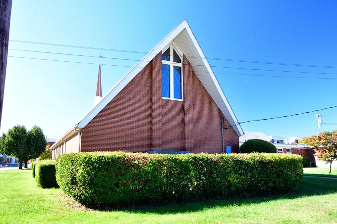

Preservation gift
Support thoughtful care of sacred architecture and church systems.
The restoration campaign
Renewing sacred space for worship, accessibility, hospitality, community care, and generations still to come.
Why it matters
This is more than a building project. It is an investment in accessible welcome, historic stewardship, worship, formation, hospitality, and a Black Episcopal witness that matters to Greensboro.
Project scope and priorities need church confirmation before public launch.
Campaign progress Verify before public launch
$640,000of $1,000,000 prototype goalThese amounts came from the prototype strategy and are not verified by the official public campaign page.
Civil Rights preservation
Greensboro's African American Civil Rights preservation work identifies Redeemer among significant sites being prepared for National Register nomination, affirming the restoration campaign's connection to memory, worship, and justice.

Restoration priorities
Campaign photography should eventually document approved building needs, craftsmanship, accessible improvements, and future vision. A before-and-after reveal can be activated when matched, approved photographs are available.
Current image is architectural context, not a documented renovation condition.
Ways to take part
Support thoughtful care of sacred architecture and church systems.
Give in honor or memory of someone whose faith helped shape the way.
Strengthen access, welcome, and ministry in the heart of Greensboro.
Named giving levels and donor recognition opportunities need church approval.
Campaign pledge
Campaign questions
No. It records pledge intent only after the backend is configured. Online gifts use the church’s approved giving provider.
Yes. Use the pledge field and choose a recognition preference. Final recognition practices need church approval.
No. The figures displayed are prototype values and must be verified before public launch.
Contact the church office at (336) 275-0033 until a campaign-specific contact is confirmed.